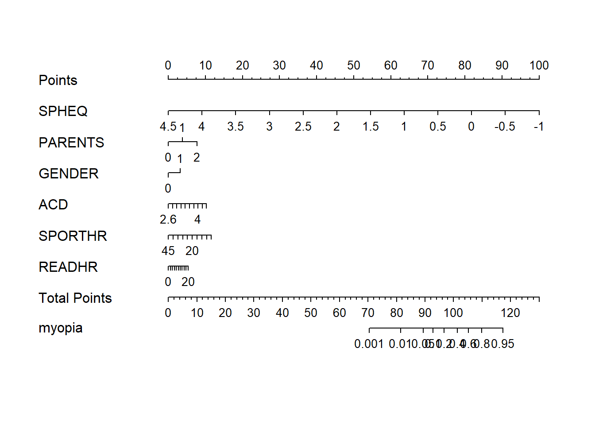
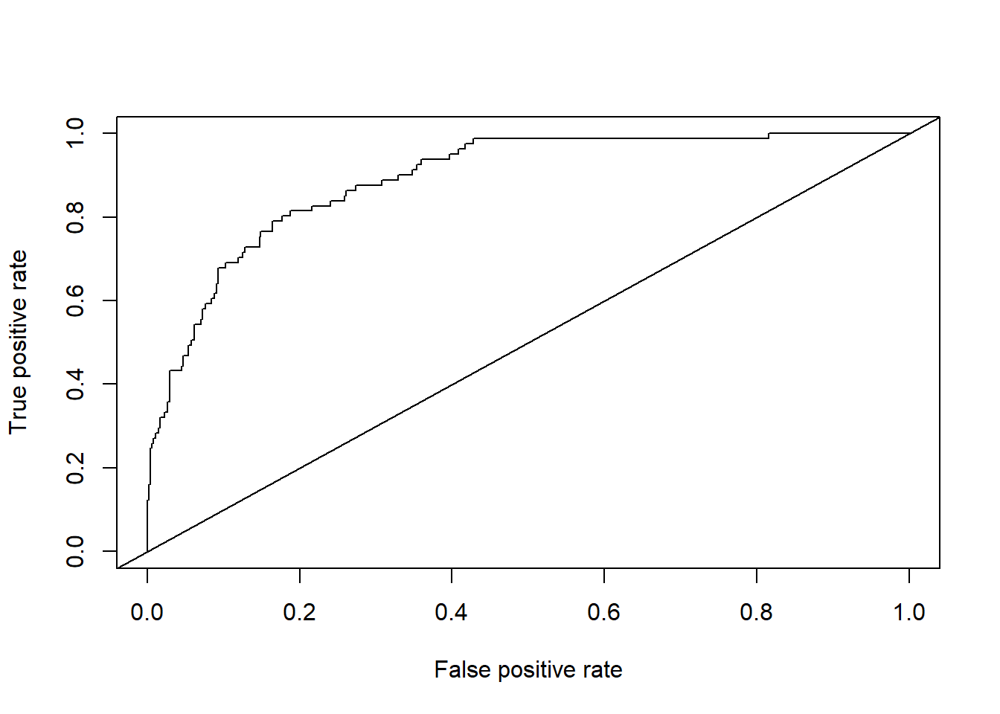
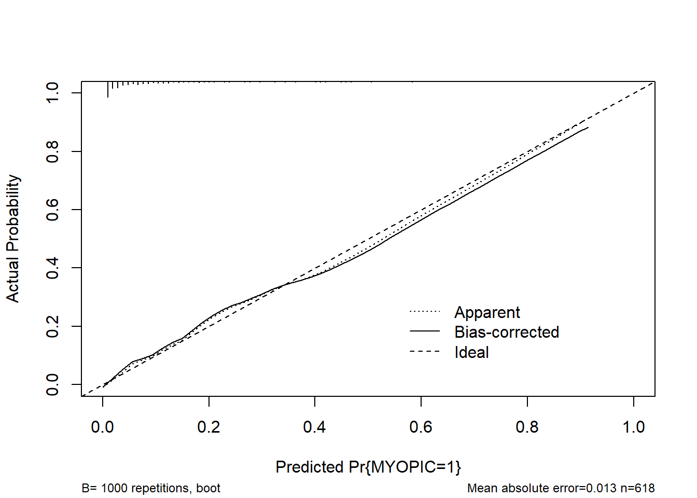
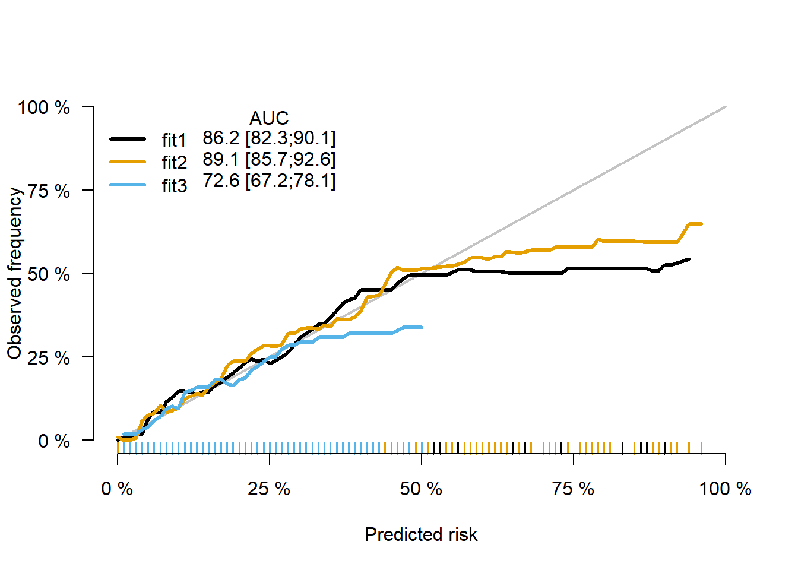
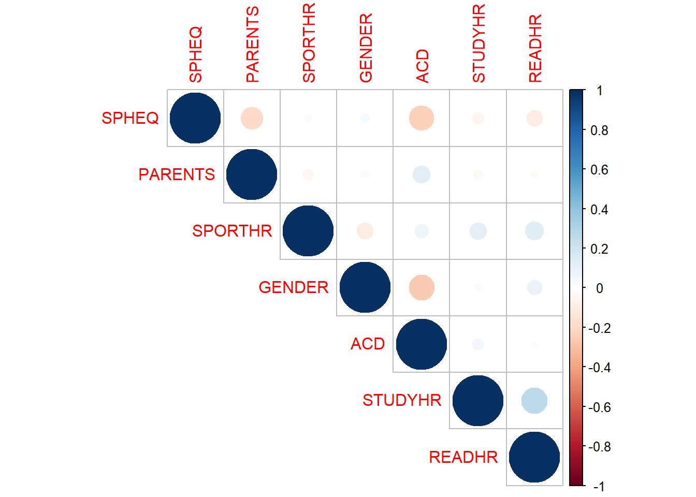
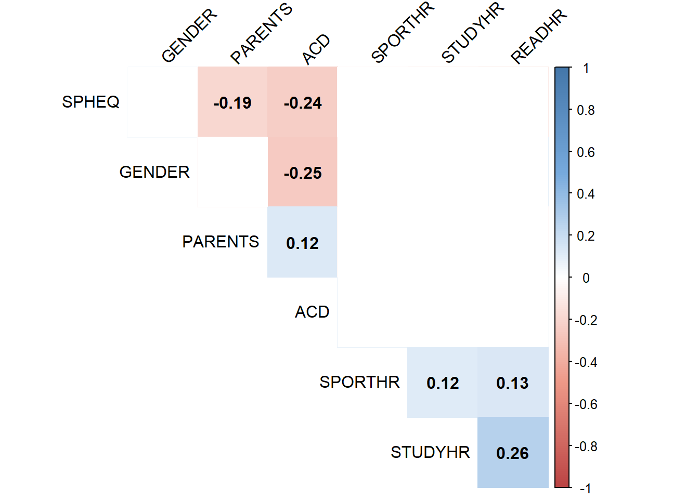

第 7 章 模型构建及评价
7.1 建立模型并绘制列线图
7.1.1 建立一个模型
library(tidyverse)
myopia <- read.csv("myopia.csv") %>%
mutate(PARENTS=MOMMY+DADMY) %>%
select(ID:DIOPTERHR,PARENTS)
library(rms)
dd <- datadist(myopia)
options(datadist=dd)
model<- lrm(MYOPIC~SPHEQ+PARENTS+GENDER+ACD+SPORTHR+READHR,data=myopia,x=TRUE,y=TRUE)#作为模型进行下面的操作7.1.2 列线图1
nom1 <- nomogram(model,fun = plogis,fun.at=c(0.001,0.01,0.05,0.1,seq(0.2,0.8,by=0.2),0.95,1.0),lp=FALSE,funlabel = 'myopia')
plot(nom1) ### 列线图2
# # install.packages("DynNom")
# library(DynNom)
# model_dynnom <- glm(MYOPIC~SPHEQ+PARENTS+GENDER+ACD+SPORTHR+READHR,data=myopia,family = binomial())
# DynNom(model_dynnom,DNtitle = "Nomogram",DNxlab = "Probability")7.1.3 C统计量
myopia$predvalue <- predict(model)
# install.package('ROCR')
library(ROCR)## Warning: 程辑包'ROCR'是用R版本4.1.3 来建造的pred <- prediction(myopia$predvalue,myopia$MYOPIC)
perf <- performance(pred,"tpr","fpr")
plot(perf)
abline(0,1)
auc <- performance(pred,"auc")
auc@y.values## [[1]]
## [1] 0.8914178# model_glm <- glm(MYOPIC~SPHEQ+PARENTS+GENDER+ACD+SPORTHR+READHR,data = myopia,family = binomial())
# myopia$predvalue <- predict(model_glm)
# # install.package('ROCR')
# library(ROCR)
# pred <- prediction(myopia$predvalue,myopia$MYOPIC)
# perf <- performance(pred,"tpr","fpr")
# plot(perf)
# abline(0,1)
# auc <- performance(pred,"auc")
# auc@y.values7.1.4 Brier评分
Brief分数，是衡量概率校准的一个参数。
简单来说，可以被认为是对一组概率预测的”校准”的量度，或者称为”成本函数”，这一组概率对应的情况必须互斥，并且概率之和必须为1.
Brier score 计算公式如下（仅针对二分类资料） \(Loss=\frac{1}{N} \sum_{i=1}^{N} (y{i} -p{i})^2\)
其中yi为样本的真是标签，取值为0或1；pi为模型预测为正的概率。N是预测事件数量。
式子直接计算了真实标签和预测概率的均方误差，Brier score越小则校准效果越好。
利用lrm函数构建：
# #计算logit P ,俗称的线性预测值
# pred.logit1 <- predict(model)
# #计算预测概率
# P1 <- 1/(1+exp(-pred.logit1))
# m=NROW(data)/3
# #绘图
# val.prob(P1,data$MYOPIC,m=m,cex=0.8)利用glm函数构建：
# model_glm<- glm(MYOPIC~SPHEQ+PARENTS+GENDER+ACD+SPORTHR+READHR,data=myopia,family = "binomial")
# #计算logitP
# pred.logit2 <- predict(model)
# #预测概率P
# P2 <- predict(model_glm,type="response")
# #绘图
# val.prob(P2,data$MYOPIC,m=m,cex = 0.8)# m,subgroups obs7.1.5 校正曲线
cal1 <- calibrate(model,method = "boot",B=1000)
plot(cal1,xlim=c(0,1.0),ylim=c(0,1.0))
##
## n=618 Mean absolute error=0.013 Mean squared error=0.00028
## 0.9 Quantile of absolute error=0.037.1.6 ps：同时绘制多条
formula1 <- as.formula(MYOPIC~SPHEQ)
formula2 <- as.formula(MYOPIC~SPHEQ+PARENTS+GENDER+ACD+SPORTHR+READHR)
formula3 <- as.formula(MYOPIC~PARENTS+GENDER+ACD+SPORTHR+READHR)
DD=datadist(myopia)
options(datadist='DD')fit1 = glm(formula1, data=myopia,family = binomial())
fit2 = glm(formula2, data=myopia,family = binomial())
fit3 = glm(formula3, data=myopia,family = binomial())
library(riskRegression)## Warning: 程辑包'riskRegression'是用R版本4.1.3 来建造的## riskRegression version 2022.03.22xb <- Score(list("fit1"=fit1,
"fit2"=fit2,
"fit3"=fit3),
formula=MYOPIC~1,
null.model = FALSE,
conf.int =TRUE,
plots =c("calibration","ROC"),
metrics = c("auc"),
B=1000,M=50,
data=myopia)
plotCalibration(xb)## Warning in getLegendData(object = x, models = models, times = tp, auc.in.legend
## = auc.in.legend, : Cannot show Brier score as it is not stored in object. Set
## metrics='brier' in the call of Score.
ps:共线性讨论的R实现
#collinearity
collin <- cor(subset(myopia, select=c(SPHEQ, PARENTS, SPORTHR, GENDER ,ACD , STUDYHR,READHR)))
# dev.off()
library(corrplot)## Warning: 程辑包'corrplot'是用R版本4.1.2 来建造的## corrplot 0.92 loadedcorrplot(collin , type="upper")
M <- collin
cor.mtest <- function(mat, ...) {
mat <- as.matrix(mat)
n <- ncol(mat)
p.mat<- matrix(NA, n, n)
diag(p.mat) <- 0
for (i in 1:(n - 1)) {
for (j in (i + 1):n) {
tmp <- cor.test(mat[, i], mat[, j], ...)
p.mat[i, j] <- p.mat[j, i] <- tmp$p.value
}
}
colnames(p.mat) <- rownames(p.mat) <- colnames(mat)
p.mat
}
# matrix of the p-value of the correlation
p.mat <- cor.mtest(subset(myopia, select=c(SPHEQ, PARENTS,
SPORTHR, GENDER ,ACD , STUDYHR,READHR)))
head(p.mat[, 1:6])## SPHEQ PARENTS SPORTHR GENDER ACD
## SPHEQ 0.000000e+00 1.351303e-06 0.577189469 4.206886e-01 1.841368e-09
## PARENTS 1.351303e-06 0.000000e+00 0.270789297 5.333279e-01 2.718984e-03
## SPORTHR 5.771895e-01 2.707893e-01 0.000000000 1.025312e-02 6.185484e-02
## GENDER 4.206886e-01 5.333279e-01 0.010253119 0.000000e+00 1.757790e-10
## ACD 1.841368e-09 2.718984e-03 0.061854843 1.757790e-10 0.000000e+00
## STUDYHR 1.730743e-01 3.891322e-01 0.003930083 5.391071e-01 1.982234e-01
## STUDYHR
## SPHEQ 0.173074294
## PARENTS 0.389132155
## SPORTHR 0.003930083
## GENDER 0.539107149
## ACD 0.198223365
## STUDYHR 0.000000000col <- colorRampPalette(c("#BB4444", "#EE9988", "#FFFFFF",
"#77AADD", "#4477AA"))
#create correlation plot
corrplot(M, method="color", col=col(200),
type="upper", order="hclust",
addCoef.col = "black", # Add coefficient of correlation
tl.col="black", tl.srt=45, #Text label color and rotation
# Combine with significance
p.mat = p.mat, sig.level = 0.01, insig = "blank",
# hide correlation coefficient on the principal diagonal
diag=FALSE )
vif(model)## SPHEQ PARENTS GENDER ACD SPORTHR READHR
## 1.034080 1.032454 1.101447 1.092771 1.054899 1.060157VIF 值 >= 10 表示高共线性。在这种情况下，所有 vif 值都接近 小于10